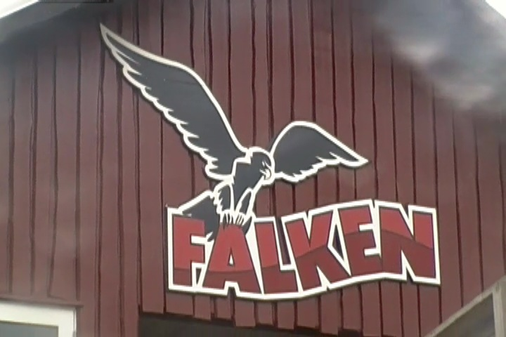

| |
Falken Review

Today, we're at Fårup Sommerland where we'll be reviewing Falken, the park's wooden coaster and one of the only wooden coasters ever made by S&S. One of only 4 wooden coasters they've ever made. And half of them are gone, so only 2 are left. Done 2 out of 4, including one of the dead ones. But I'm also limited to only 3 out of 4 since I never got the other dead one. Just need Timberhawk @ Wild Waves. And yeah. This is a really good ride. It's got some roughness to it that hurts, but it's still a really good ride. So let's hop in the trains, pull down the lap bar, and away we go. We head down a dip and start climbing the lifthill. Not much of a view other than trees and a fairly nice view of Orkanen. We soon enough, reach the top. We head down a smallish drop and around a turn, as a sort of...pre drop sort of stuff. I know some will have a dip and a turn around into the main first drop. But this isn't that. This is just...this weird sort of...No. It's basically that. Just on a much bigger scale. And hey, it gives us some speed going into our first drop. Yeah, the first drop isn't that big. But we already have some speed and this first drop just gives us even more. WEE!!! And hey. We're really going fast now. We then head into a decent sized airtime hill. WEE!!! And we barely slow down at all. We just glide over this hill. Slide right over it like butter. And speaking of sliding like butter, our butts just slide right out of the seat like butter. Just pop. And then at the bottom, we get to TAKE THE TUNNEL!!! YEAH!!! This ride is awesome! Good speed, good airtime. A ton of fun. Nothing can ruin this ride. Oh look time to turn. SLAM!!! OUCH!!! Yeah, you probably figured out the big problem with this ride. All the turns. The laterals on this ride are STRONG. Painfully strong. I know I've mentioned on other rides that I love strong laterals that smash your ribs. But for some reason, it's just not enjoyable on this ride. I think these laterals reach a pain threshold and surpass it. These turns just flat out hurt. Just a simple banked turnaround can be a pain, which is a shame as I really like everything else. We then head around another turn, SLAM!!! But don't worry. Things are getting better on this ride. We then head over another airtime hill, and it's great. We float right on over the airtime hill and just sail on out of our seats. This is good again. Ooh, but then we have to go through another turn. SLAM!!! OUCH!!! Well, at least there's a little bit of straight track now that's actually a really gradual drop. That's a lot of fun. And due to our speed, we just fly right on through it. And look. Two more airtime hills. YES!!! Ass goes out of seat. Ass falls back into seat. Ass goes out of seat. Ass falls back into seat. Unfortunetly, this now leads into a banked upward helix. F*CK!!! NO!!! SLAM!!! OUCH!!! MAKE IT STOP!!! Well, like it or not, that helix is the end of the ride. Falken is a really frustrating ride as it's really good for the most part. It has some decent speed and the airtime on this ride is actually really good. It's a lot of fun. But those damn turns prevent it from really becoming a great ride. But even so, I really like the ride because...Damn. That airtime is just so good. I really like it. It kind of reminds me of the other S&S Wooden Coaster I've ridden, Hellcat @ Timber Falls. Really great airtime, a lot of speed, brutal laterals. They're both really similar in this way. I'd definetly recommend riding Falken as it's really a lot of fun. But I also hope that Fårup Sommerland gives it a good retracking because it can be even better if they smooth out those turns.
7/10
Location: Fårup Sommerland
Opened: 2004
Built by: S&S Power
Last Ridden: June 20, 2014
Falken Photos



Home
|